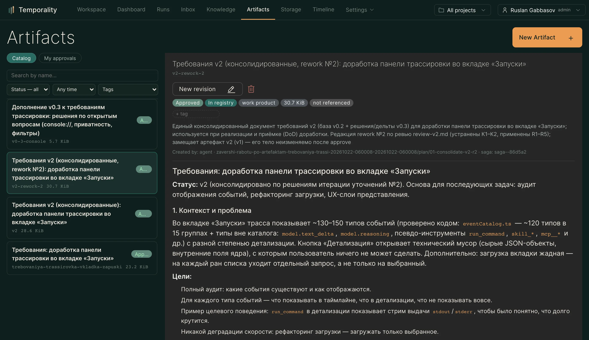

Артефакты
Реестр документов с согласованием людьми — регламенты, требования и инструкции, которым агенты доверяют.
Артефакт — документ в реестре: регламент кодирования, требования к фиче,
инструкция по выкладке, шаблон сметы, чек-лист аудита. В промпт агента
попадает только ссылка; тело агент подгружает по требованию
(artifact_search / artifact_read с аудитом чтения). Так большой регламент
не съедает контекст, но всегда доступен, когда нужен.
Главная ценность — доверие. У артефакта есть статус, версия и круг согласования, поэтому «смотри регламент X» означает проверенный людьми документ, а не случайный черновик: агент предлагает, человек утверждает.

Страница Артефакты (/artifacts), детали — docs/artifact-registry.md
и docs/artifact-lifecycle.md.
#Типы и назначение
| Тип | Источник тела |
|---|---|
| Текстовый документ | Хранится в Temporality (markdown) |
| Внешний URL | Проксируется и кэшируется ядром (корпоративная вики, Confluence) |
Назначение (kind) делит один реестр на два сценария потребления:
- reference — регламенты, инструкции, чек-листы: то, на что ссылаются навыки;
- work — требования, спеки, проектные решения: рабочие продукты, которые производятся и согласуются в задачах и сагах.
Реализованное требование может позже стать reference-документом нового
навыка — той же записью с другим kind после нового круга согласования.
#Статусы и версии
Жизненный цикл ведётся на уровне версии:
| Статус | Значение |
|---|---|
| draft | Черновик: создан человеком или агентом, редактируем. Читать можно (переиспользование между агентами — половина ценности), но это неподтверждённый материал |
| in_review | На согласовании: правки заблокированы |
| approved | Утверждён человеком: неизменен, доступен для ссылок из навыков |
| rejected | Возвращён с замечаниями: можно доработать и отправить снова |
| superseded | Заменён более новой утверждённой версией |
Правка утверждённого — всегда новая версия и новый круг согласования. Утверждённая версия продолжает обслуживать агентов и навыки, пока редакция проходит согласование. Навыки ссылаются на id артефакта и всегда резолвятся в последнюю утверждённую версию.
#Согласование
- Только человек утверждает. Само-одобрение запрещено на уровне API: решение принимает именованный человек, а не агент и не «сумма сигналов».
- Круг согласования. Автор отправляет артефакт на ревью (идемпотентно по
версии, квота
ARTIFACT_SUBMIT_PER_DAYна ран — защита очереди от зафлудившего рана) и назначает согласующих: конкретный человек, подразделение, роль или владелец проекта. Подразделение раскрывается в активных людей на момент отправки; голова подразделения тоже согласующий. - Режимы.
all— решение принято, когда все ответили «за» (первое «против» закрывает круг отказом);any— достаточно первого ответа. - Решение из мессенджера. Каждый согласующий получает уведомление в
свой канал со ссылкой на карточку артефакта и может решить прямо в чате:
первое слово ответа решает (
approve/одобрить/lgtm— за,reject/отклонить— против), остальное становится комментарием. Неоднозначный ответ круг не закрывает — бот просит ответить по форме. - Доработка в цикле. Отклонение возвращает артефакт автору с причиной:
человек правит сам (в интерфейсе) или агент вносит правки
(
artifact_update) и отправляет снова. Круги не ограничены, каждый оставляет след в истории согласований. - Напоминания и эскалация. Круг молчит дольше
ARTIFACT_REVIEW_TIMEOUT(по умолчанию 72 часа) — согласующим уходит одно напоминание; ещё через один таймаут — эскалация руководителю отдела артефакта (или администратору). Свип выключается значением0. - Идемпотентность. Повторный approve/reject того же круга — 409 без изменения состояния; решение фиксируется ровно один раз. Автор запроса всегда может решить свой собственный круг.
#Инбокс согласований
На странице «Артефакты» первым открывается вкладка My approvals —
очередь открытых кругов, адресованных вам: очередь ведёт, каталог —
поверхность для поиска. Пока есть что решать, в меню «Артефакты» горит
бейдж со счётчиком. Фильтры каталога — статус, возраст, теги, автор
(человек или подразделение в одном поле); ссылка вида ?id=… открывает
конкретный артефакт.
#Пример: сложно согласованный документ
Как агенты и люди вместе собирают документ, который проходит несколько кругов согласования (по реальному сценарию — требования к доработке):
- Задача. Пользователь просит в чате: «Соберите требования к доработке
панели трассировки и согласуйте с командой». Агент регистрирует сагу
(
saga_register), которая свяжет всю историю: требования → согласование → раны реализации. - Черновик. Агент-аналитик создаёт артефакт
kind=work(artifact_create, сsaga_id) и наполняет его итерациями. Другие агенты читают черновик в своих ранах (artifact_readчестно показываетdraft) и дополняют его замечаниями — переиспользование работает до утверждения, но черновик всегда помечен как неподтверждённый. - Первый круг. Агент отправляет документ на согласование
(
artifact_submit): согласующие —org:backendиrole:security, режимall, в примечании — контекст и что проверять. Согласующие получают уведомления в мессенджеры. - Отказ с содержанием. Security-ревьюер отвечает в треде
reject не хватает раздела о секретах— круг закрывается отказом, документ возвращается автору с причиной. - Доработка. Агент вносит правки (
artifact_update) и отправляет снова — новый круг, оба круга видны в истории согласований с вердиктами и комментариями. - Утверждение. Все согласующие отвечают «approve» — версия 1
становится
approvedи неизменной. - Работа на документе. Навык «Реализация фичи» получает ссылку на
артефакт (таб Artifacts в редакторе навыка или
artifact_refsвskill_propose); агенты-исполнители читают утверждённую версию по требованию — каждое чтение журналируется, так что видно, кто и в каком ране опирался на документ. - Новая редакция. Требования меняются: правка утверждённого возможна
только новой редакцией (
artifact_updateсnew_version: true) — черновик версии 2 живёт рядом с утверждённой версией 1, повторное согласование проматывает его вapproved, а версия 1 становитсяsuperseded. Агенты без пауз продолжают работать на живой версии.
Именно так требование переживает несколько итераций уточнений, сохраняя историю: кто предложил, кто отклонил с чем, что изменилось между версиями.
#Связи
- Сага — артефакт может принадлежать длительной работе (требования к фиче в рамках саги): связка даёт сквозную трассировку от требования до ранов реализации.
- Навык — манифест навыка ссылается на артефакты как на справочные материалы; в навыки попадают только утверждённые.
- Проект / отдел / организация — область видимости: общекорпоративный регламент виден везде, проектный — только в проекте.
#Инструменты агента
| Инструмент | Что делает |
|---|---|
artifact_search |
Семантический поиск; фильтры по статусу и назначению |
artifact_read |
Чтение чанками с аудитом: кто, что и в каком ране читал |
artifact_create |
Создаёт черновик (kind=work — рабочие продукты) |
artifact_update |
Правит черновик или возвращает rejected; с new_version: true открывает редакцию утверждённого |
artifact_submit |
Отправляет на согласование: список согласующих, режим all/any, примечание |
Утверждённый документ заблокирован для прямых правок: тул сообщит, что нужна новая редакция. Решение об утверждении агент принять не может — только человек.